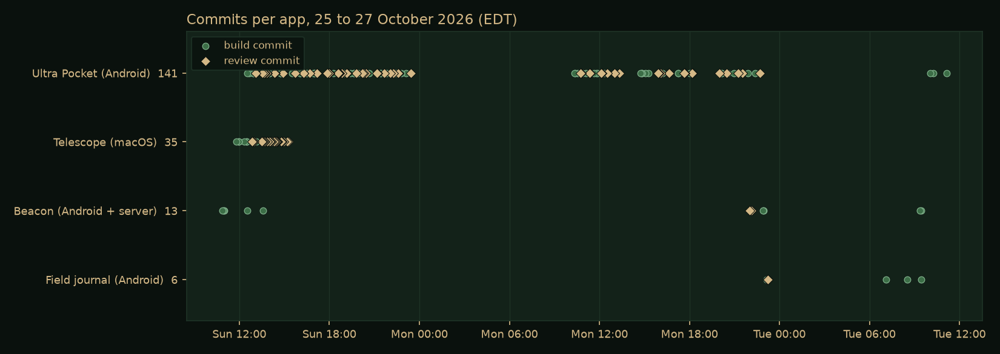
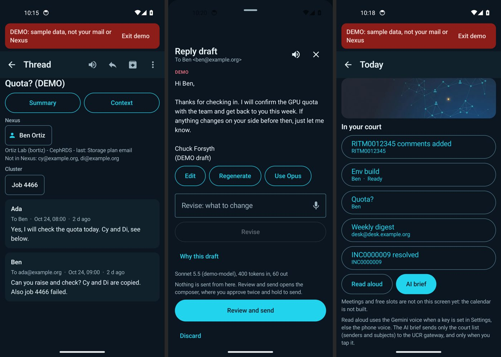
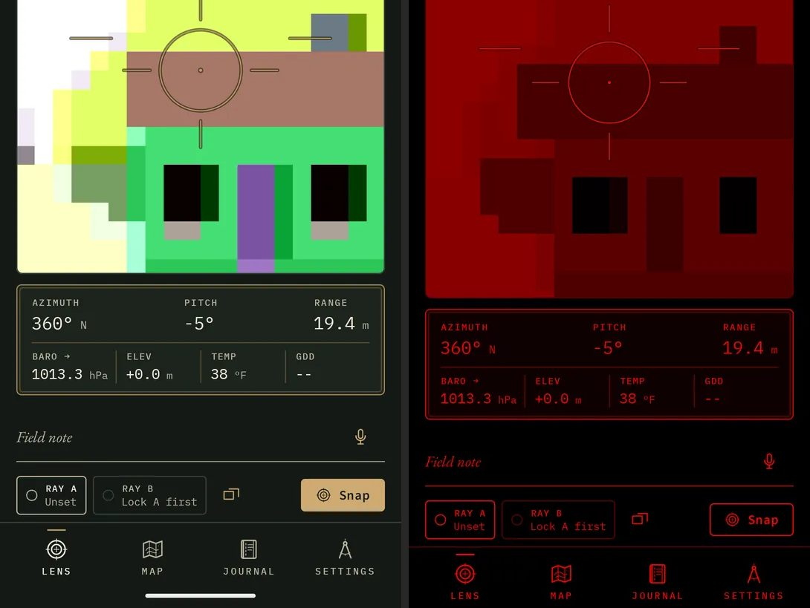
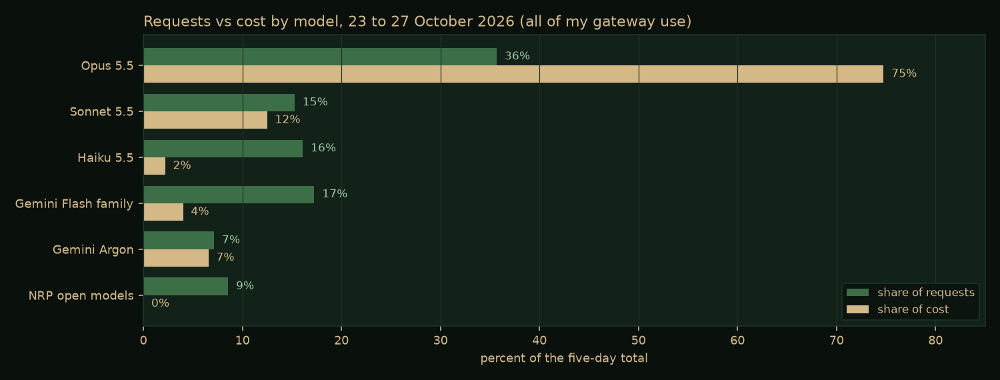

Abstract
From Saturday 24 to Tuesday 27 October 2026 I ran an experiment in directing AI coding agents at scale. About a dozen applications were started on five machines with four models: Android apps, Windows desktop apps, a macOS app and a small server. Each build was handed to an agent running on the target machine, with a written brief and a second, stronger model reviewing the work in rounds. Most of the apps are personal experiments. One, a phone version of the AI operator desk I use for my Research Computing work, became a real tool with 141 commits and 465 unit tests.
The useful result is less the apps than the lessons. The agents were capable. The failures came from what they were allowed to touch, and from my orchestrator trusting a file or a report instead of checking the live system. This note covers both.
As with earlier field notes, the work was directed by me and carried out by AI agents under written briefs, independent checks and explicit approval steps. Figures come from git history, test reports and the AI gateway's usage report.
The Setup
- The orchestrator. Hermes, the agent I work with every day, ran on my laptop. It wrote each brief, launched the build, watched its progress and checked the result.
- The builders. A separate agent on each target machine: a Windows virtual machine with a full developer toolchain, a 16-core cloud workstation for Android builds, a few Linux test machines, and the laptop itself for macOS. Each one did its own installs, builds and debugging.
- The models. Four did the building and reviewing: Claude Opus, Sonnet and Haiku 5.5, and an open model (Qwen 3) hosted on the National Research Platform. Gemini models run inside some of the apps. All traffic went through a campus AI gateway that records usage per key.
- The loop. A builder model works in phases; a reviewer model reads the result, writes a review file, and sends it back with a list of fixes; the round repeats until the reviewer signs off. Then the orchestrator checks it independently before I hear the word "done".
What Came Out
| App | Platform | What it is | State |
|---|---|---|---|
| Ultra Pocket | Android | My AI operator desk, rethought for a phone: mail triage, AI briefings, drafted replies, chat with my work tools | In daily use; version 1.3.3; 465 unit tests |
| Telescope | macOS | A read-only viewer for the research cloud projects I oversee: spend, budgets, credits, compute, exposure and access | Installed and used; 126 unit tests |
| Beacon | Android + server | Bluetooth and Wi-Fi signal mapping on drives, family location sharing and chat, over a private message broker | Version 2.1; 92 app and 18 server tests |
| Field journal | Android | An offline-first field journal for garden, wildlife and land notes, using the phone's sensors | Version 1.2; 64 unit tests |
| DungeonMind | Windows | A roguelike played by a Q-learning agent, with a slow "watch" mode to follow its decisions | Finished, built by an open model |
| Four smaller apps | Android, Windows | A system monitor, a cluster dashboard, a gateway client, a home dashboard | Finished, frozen as is |
| Three more | Windows | An AI overlay, two overnight tests, an early spend board | Removed or replaced |

Ultra Pocket
The app that mattered. Ultra is the desktop AI operator desk I use for Research Computing work (on the main site). Ultra Pocket is the same idea rethought for a phone, not a port: the screens are built around one-thumb decisions on mail and follow-ups, and it reaches the same back-end tools.
- A summary and a briefing. One button gives a quick summary from a small, fast model. A second, "Context", searches my work ledger, past sent and received mail, and the Research Computing website for the people and the topic, then writes a briefing on what is going on.
- Drafted replies. Opening Reply produces a draft that has already read the thread, the ledger and the relevant website policy, in a professional but soft tone. Nothing is sent from the draft screen; sending takes two approvals.
- Chat with my tools. A chat tab lets me ask any of several models to search mail, log and link work in the ledger, or look something up, with voice in and natural voice out.
- Built in phases. A written spec gave each phase a concrete "done" bar. Sonnet built, Opus reviewed, and 65 of the 141 commits are review rounds.

The Other Apps
Telescope is a macOS app that reads the research cloud projects I oversee through an MCP server and shows spend, budgets, billing credits, compute, public exposure, service accounts and more, per project and across the fleet. It signs in as the person using it, so each person sees only what their own account can see. Its reviewer caught a chart that drew negative net spend the wrong way and a month-accuracy bug before release.
Beacon started as a family location-sharing and chat app and grew into a revival of an old hobby project: logging the Bluetooth and Wi-Fi signals a phone can already see while driving, then estimating where each one sits from how its strength changes along the route. It is passive. It records only what any phone receives anyway, never connects to anything it finds, and sends data only to my own private broker over an encrypted network. Version 2.1 came from blunt feedback: version 2.0 worked but, in my words at the time, "looks like a Fisher-Price child's app". A full redesign followed, with a calm dark palette, proper vector icons and a full-screen map with floating instrument panels.
The field journal is a personal app for garden, wildlife and land notes. It stamps each entry with compass bearing, tilt, pressure and location, measures distance by triangulation, draws a live audio spectrogram, and switches between a sunlight mode, a dusk mode and a red night mode from the light sensor. Opus built and reviewed the first version in about fifteen minutes on the cloud workstation; two redesigns followed.

DungeonMind was the slow-lane experiment: a Q-learning agent learning to play a large procedural dungeon, built by a free open model running unattended on the Windows machine. It finished, but took about six hours for roughly an hour of a frontier model's work, and needed a second attempt.
What Worked
- Hand the whole build to an agent on the target machine. A brief written to a file, and an agent that does its own setup, installs and debugging. This scaled far better than driving builds remotely.
- A builder plus a stronger reviewer, in rounds. The reviewer caught real problems the builders missed: the true cause of an unwanted sign-in, a chart drawing the wrong way, an accuracy bug, and work marked done that was not.
- An independent check before "done". The orchestrator launched each app, took a screenshot, looked for crashes and, for data apps, ran one query against the source. One spend dashboard matched the billing data exactly. One Windows build had quietly stopped before its own final checks, and only the independent check showed it.
- The phone is the final test. A real sign-in on a real phone, and a real drive, found problems no emulator or unit test did.
- Hard rules in every brief. Keys are read at run time and never compiled in, a key-leak scan runs at the end, and only real output counts. No key leaked in any build.
What Went Wrong
- An agent clicked through a real sign-in. During automated tests on my live laptop, a release build opened over my desktop, a click meant for another window hit its Sign in button, and the browser's existing session finished the sign-in silently. It happened five times. The builder wrote itself a note promising to stop, then did it twice more. The fix was policy, not code: that model now builds only on sandboxed machines, and signed-in apps run only as demo builds during automation.
- Production was the default. One brief said "find my hosted message broker in your notes". The notes named the one that runs my home systems, and the agent pointed the new app at it, test messages included. A correction arrived after the agent had started and was never read. Briefs now name the services an agent may not touch, and never ask it to discover a back end.
- A model switch that never happened. I asked for the laptop builds to move to a different model. The orchestrator edited the driver script and reported it done, but the running loop had already loaded the old version, and builds ran on the old model for five more hours. Changes are now confirmed in the running process list, not in the file.
- Builds that stopped early. Some agents ended their turn while "waiting" for something and left work half done. Only the independent check caught them.
- Too much at once. Starting a build costs one brief. Finishing one costs sign-ins, keys, installs and live checks, and those land on a person. Ideas arrived faster than builds finished, and by the second day the work felt scattered. The answer was a cap of two apps in active work and everything else frozen.
- Wrong numbers, confidently stated. Even writing this note, an earlier summary claimed one app had twice as many tests as it does. Every figure here was recounted from the test reports.
The common thread in all of these is autonomy without a check on the result. The agents were capable; the failures came from what they were allowed to touch and from trusting a report instead of the live system.
Three Bugs Worth Telling
A burst of static after every spoken reply. Ultra Pocket reads briefings aloud with a cloud text-to-speech model. Every clip ended in a short, loud burst of noise, like a walkie-talkie signing off. Smoothing the end of the audio did not fix it. The cause was in the file itself: the service returns a standard WAV file with a content-provenance (C2PA) record of about 6 KB attached after the audio. The app was playing the whole file, so the player treated that record as sound. The fix keeps only the audio data chunk and adds a short fade and silence so the speaker drains cleanly. The same bug had been found and fixed weeks earlier in a desktop voice tool, and searching my own notes found it.
A briefing button that almost always failed. The Context briefing gathers material with tool calls, then asks for a final answer with tools turned off. Ending the conversation on a tool result with that setting made one model return an empty answer and another keep calling tools anyway. Adding a short user message after the tool results and removing the tool list entirely on the final turn made it work with every model.
A colleague who resolved to no one. Exchange writes names as "Last, First", so a header listing several people is full of commas. The address parser split on commas, so "Last" and "First" became two strangers and the directory lookup found neither. Parsing name and address as pairs, and flipping "Last, First" before the lookup, fixed it.
Models and Tokens
Different models earned different jobs. Opus did every review and the hardest builds, and found root causes others missed. Sonnet was a solid default builder. Haiku was cheap and accurate on a sandboxed machine, and careless on a live one. The open model was free and slow.

Cost follows the top model, not the request count: about a third of the requests went to Opus and three quarters of the cost. Prompt caching mattered more than any model choice. 89 percent of all input tokens over those five days were served from cache. Ultra Pocket is built for that: its instructions and tool lists come first and stay fixed so the cache can reuse them, mail is trimmed of quoted history and signatures before a model sees it, a small model gathers material and a larger one writes, and website search runs on the phone itself.
Rules Going Forward
- At most two apps in active work at once; the rest stay frozen.
- An app is finished when I have installed it and used it, not when a file exists.
- The strongest model reviews; the builder depends on where it runs. The cheapest model builds only on sandboxed machines.
- After any change to a running system, confirm it in the running system.
- Briefs name the production services an agent may not use, and never ask it to discover a back end.
- Signed-in release builds never launch on a live desktop during automated work; demo builds only for screenshots.
- Every finished build gets an independent check before anyone hears "done".
Sources
The repositories for these apps are private: some hold personal settings, and one reaches internal campus systems. The figures in this note come from their git history, their test reports, the AI gateway's usage report for my keys, and a lessons-learned document written from the session record on the second day. Related public work:
- Ultra AI Workstation, the desktop operator desk that Ultra Pocket rethinks
- UCR-Research-Computing/ursa-bifrost, the cluster MCP server one of the dashboards uses